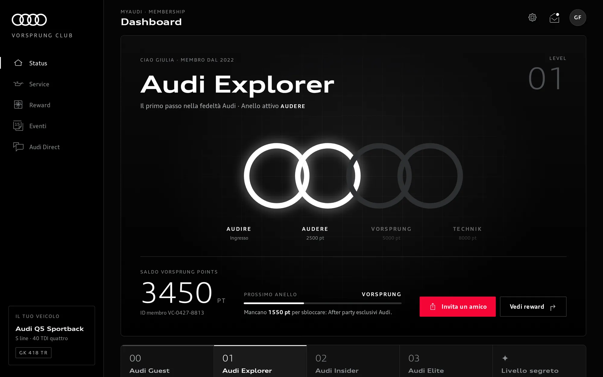
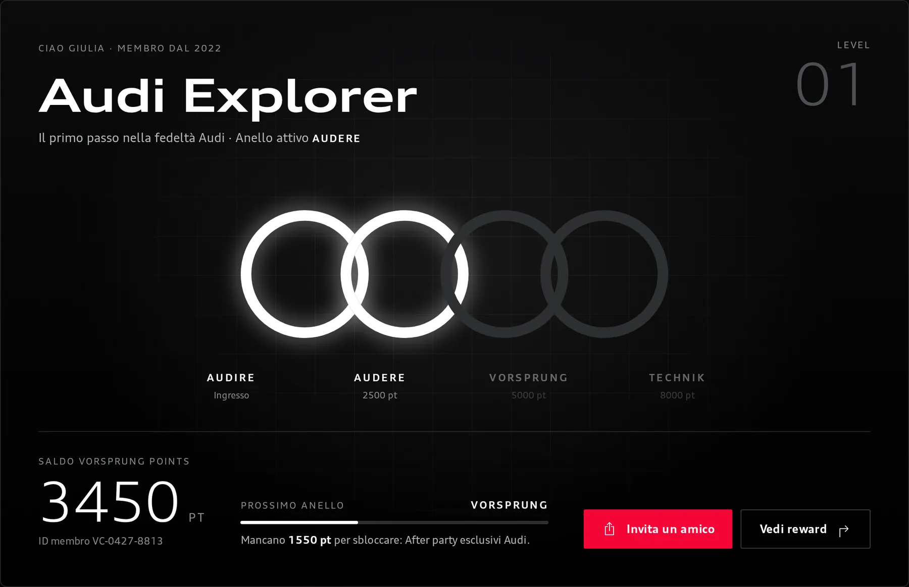
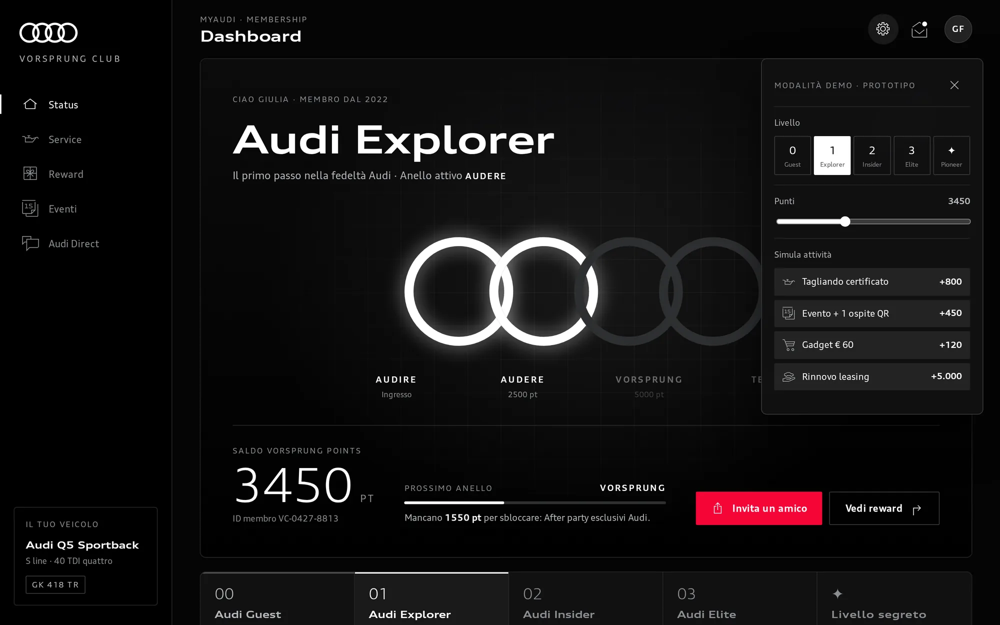
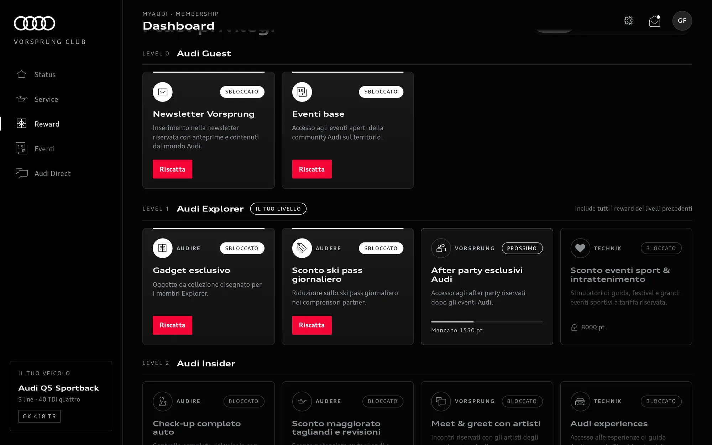
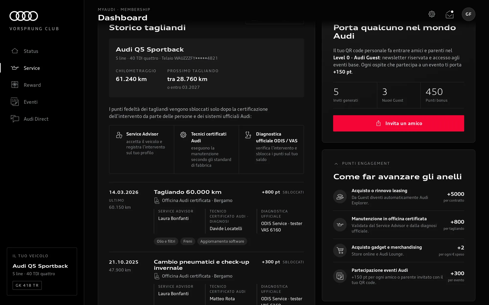
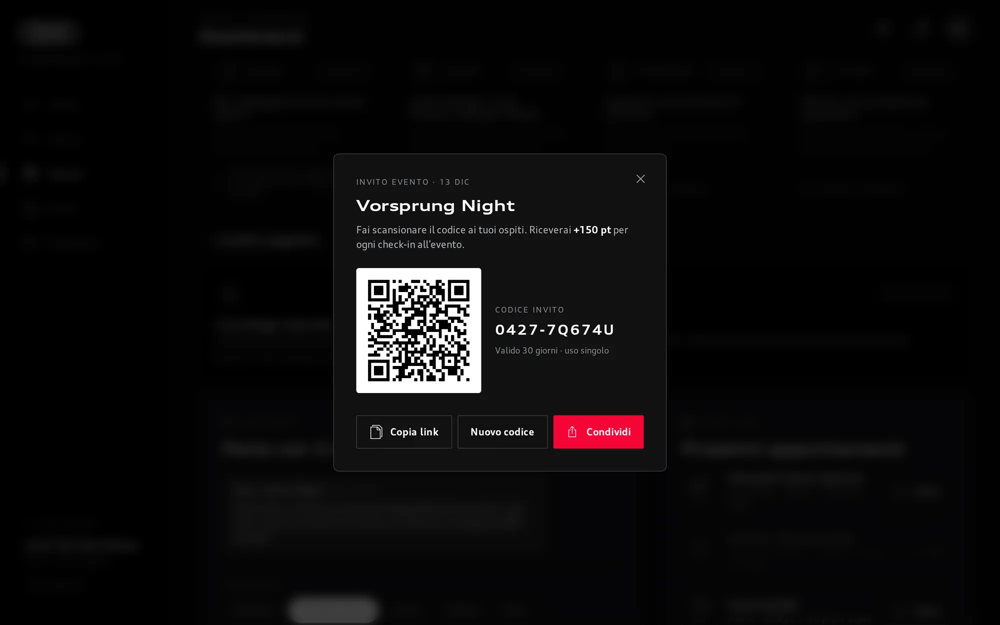
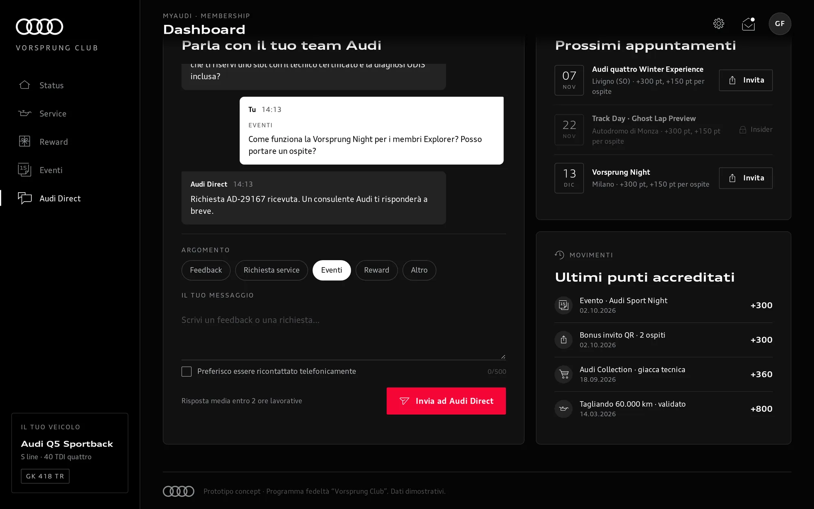
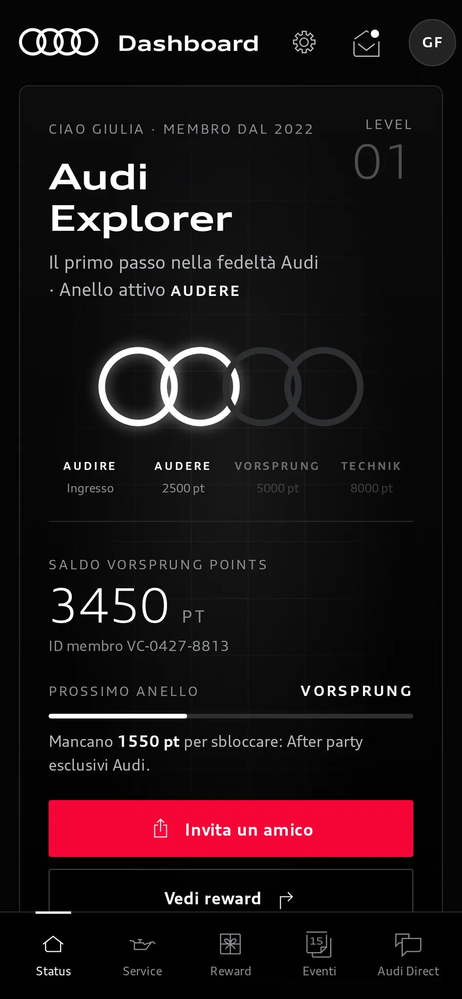
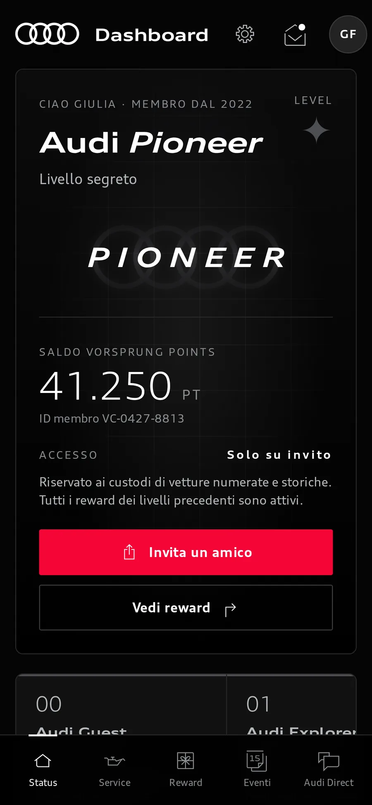
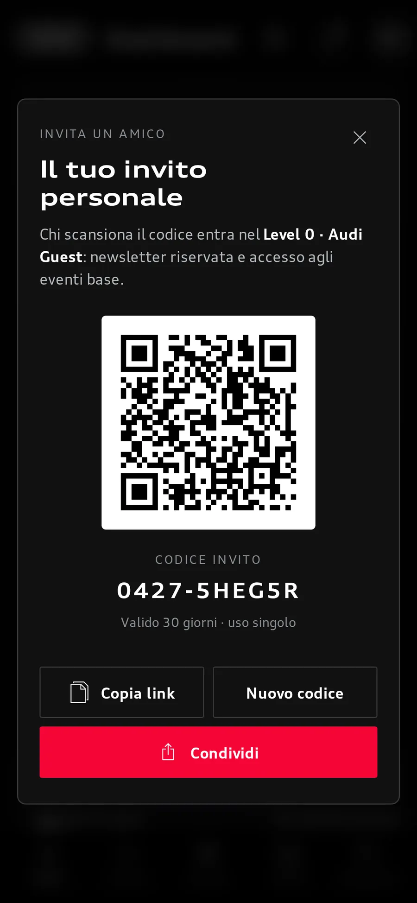

Hackathon · 10 October 2026 · H-FARM College
Audi Vorsprung Club
A loyalty programme imagined inside myAudi, where every milestone lights one of the four rings. Built as a working prototype for H-ACK Audi — Co-Design the Future, a hackathon organised by Audi with H-FARM College.
- Team of eight
- Five levels
- Four rings
- Generated in full by AI
- Demo data
- 8In the team
- 5Levels
- 4Rings
- 25 sDemo

Five levels, four rings
Climb the club
Four visible levels and one hidden. Inside the three customer levels, points from services, events, merchandise and invited guests light the rings AUDIRE, AUDERE, VORSPRUNG and TECHNIK — and as they light, the rings slide closer, until the fourth joins them into one symbol. Choose a level to see the prototype as that member would.

Level 00
Audi Guest
Enters by invitation, through a member’s QR code. No rings yet.
- Vorsprung newsletter, with previews from the Audi world
- Access to open community events
Demo balance 450 pt. The progress bar points towards Explorer: “become an Audi customer to light the first ring — the points you have stay yours”. Two of the three events show as locked.
Level 01
Audi Explorer
For every Audi customer, by purchase or lease. The first ring, AUDIRE, lights on entry; the others at 2,500, 5,000 and 8,000 points.
- Exclusive collectable gadget
- Day ski-pass discount at partner resorts
- Exclusive Audi after-parties
- Discounts on sport and entertainment events
Demo balance 3,450 pt — two rings lit, 1,550 pt to the next. Drag the points to 8,000 and the four rings slide together into one symbol.
Level 02
Audi Insider
A second Audi, or a car worth more than €41,000. Rings at entry, 4,000, 9,000 and 15,000 points.
- Full vehicle check-up with official diagnostics
- Larger discount on services and inspections
- Meet & greet with artists at partner events
- Audi driving experiences, such as the Ghost Lap
Demo balance 6,200 pt — two rings lit. The Track Day event unlocks at this level.
Level 03
Audi Elite
A third Audi or more, or a car worth more than €81,000. Rings at entry, 6,000, 14,000 and 25,000 points.
- Audi Sport apparel kit
- Priority invitation to the Audi Design Hub at Milano Design Week
- Priority access in the workshop
- First refusal on exclusive releases
Demo balance 15,800 pt — three rings lit, drawn in a chrome gradient instead of white.
Level ✦
Audi Pioneer
A secret level, beyond the rings: for owners of numbered or historic cars, by invitation only.
- Private gatherings, by invitation
- Visits to centres of excellence
- A “flying doctor” service: specialist technicians who reach the car wherever it is
Until you reach it, it appears only as “Livello segreto”, with its rewards redacted. Once in, the rings fade behind the word PIONEER, the points slider is switched off — privileges here do not depend on points — and every earlier reward stays active.
Around the dashboard. On a wide screen the window stays with you as you scroll; you can also click a step.


-

-

-

Screen recording
Twenty-five seconds of it
Responsive
On a phone
The layout is responsive: under tablet width the sidebar becomes a bottom tab bar, and the level track scrolls sideways.

Status 
Pioneer 
Invite
Process
How it was made
We were a team of eight. Three of us, me included, defined the concept and the final prompt, and I wrote that prompt — a long, detailed one. An AI model generated the entire prototype from it — HTML, CSS and JavaScript. Nobody edited that code by hand; there was no time. My part of the team deliverable was this prototype; my teammates gave the pitch. We did not win an award.
So I would like it read as concept design and prompt engineering, not as software I coded.
The artefact
What it is
A single static page in vanilla HTML, CSS and JavaScript, with no build step. One state object drives a render function per section, so the structure could be ported to components later — that port was described, not done. QR codes come from the open-source qrcode-generator library (MIT).
Everything on screen is demo data: the member “Giulia”, her car, the points, the events, the service history and the replies in the chat.
- Prompt engineering
- Concept design
- HTML
- CSS
- Vanilla JavaScript
- qrcode-generator (MIT)
An unofficial concept made for the H-ACK Audi hackathon; it is not an Audi product. Audi, myAudi, the four rings and related marks are trademarks of AUDI AG. The screenshots show the prototype, which uses Audi’s typeface and icons; the prototype file itself is not published here.
Contact
Contact
I would be glad to talk about this work, and about how I work with language models as a design tool.